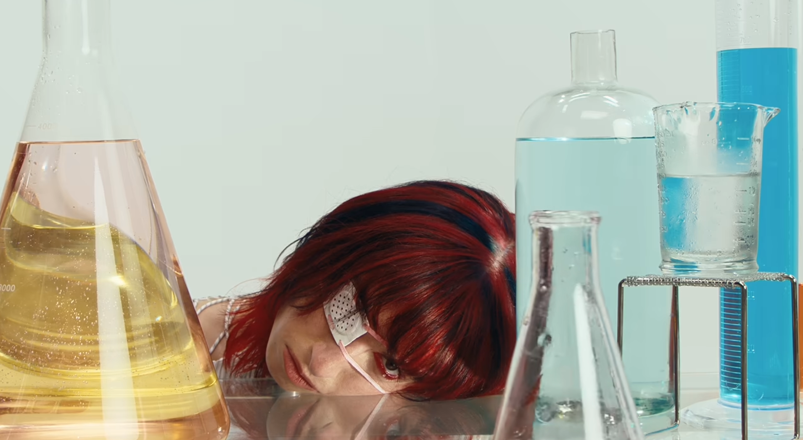

Top songs
Ten tracks that show how far Jane Remover's sound stretches, from the 2021 debut to the 2025 releases.

- Dancing with your eyes closed: Revengeseekerz, 2025. Released as a single in February 2025 before the album.
- Flash in the Pan: 2024 single, later included on the ♡ EP.
- Music Baby: New song on the ♡ EP, 2025. Also performed live as a Leroy remix.
- Professional Vengeance: Revengeseekerz, 2025. A fast, thrashing track many reviewers singled out.
- Dreamflasher: Revengeseekerz, 2025.
- Magic I Want U: 2024 single, part of the ♡ era.
- How to Teleport: 2024 single, part of the ♡ era.
- JRJRJR: Revengeseekerz, 2025. Dedicated live to anyone who has had to change their name.
- Psychoboost: Revengeseekerz, 2025. The album's only guest feature, with Danny Brown.
- movies for guys: Frailty, 2021. An early fan favorite still played live.